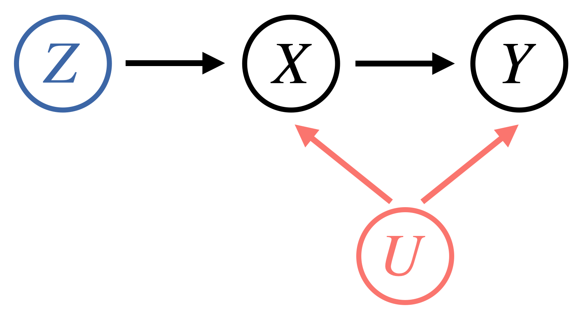

Abstract
Policies often fail due to distribution shift---changes in the state and reward that occur when a policy is deployed in new environments. Data augmentation can increase robustness by making the model invariant to task-irrelevant changes in the agent's observation. However, designers don't know which concepts are irrelevant a priori, especially when different end users have different preferences about how the task is performed. We propose an interactive framework to leverage feedback directly from the user to identify personalized task-irrelevant concepts. Our key idea is to generate counterfactual demonstrations that allow users to quickly identify possible task-relevant and irrelevant concepts. The knowledge of task-irrelevant concepts is then used to perform data augmentation and thus obtain a policy adapted to personalized user objectives. We present experiments validating our framework on discrete and continuous control tasks with real human users. Our method (1) enables users to better understand agent failure, (2) reduces the number of demonstrations required for fine-tuning, and (3) aligns the agent to individual user task preferences.
Video
Key Insights
1. Dangers of TCN in Imitation Learning
The core reason TCN is dangerous is that it introduces spurious correlations in the recorded actions that do not have their true cause in the recorded state. When TCN from a past step travels through the dynamics to influence the next state, the next state and next action are also spuriously correlated. This breaks a cardinal assumption of regression as both the inputs (states) and targets (actions) are affected by the same noise, rendering standard imitation learning approaches inconsistent. This manifests as the learner trying to reproduce the TCN, which compunds with the TCN at test time to lead to poor performance. For example, if a quadcopter flight demonstration is perturbed by TCN in the form of wind, the learner might attempt to swerve as much as the expert did, which would lead to even more swerving due to the continued influence of the wind!
2. Instrumental Variable Regression
While a queryable expert would be able to give us action labels that are not affected by TCN, this is not a realistic assumption for many domains. We instead focus on learning from observational data in the form of collected expert demonstrations. We build upon a technique from econometrics known as instrumental variable regression to denoise the inputs to our regression procedure. To do this, one conditions on an instrument $Z$: a source of random variation independent of the confounder (the shared noise between $X$ and $Y$). Graphically,
Mathematically, instead of regressing from $X \rightarrow Y$, one regresses from $X|Z \rightarrow Y|Z$. We present a unified deriviation of modern IVR techniques and derive performance bounds for them in our paper.
3. Two Algorithms for Imitation under TCN
The natural question at this point is how to apply IVR to the imitation learning problem. Our key insight is that we can leverage past states as an instrument as they are independent of future TCN! Graphically,

In math, we minimize $\mathbb{E}[\mathbb{E}[(a_{t} - \pi(s_{t})|s_{t-1}]^2]$ instead of $\mathbb{E}[(a_t - \pi(s_t))^2]$ like usual. We derive two algorithms for doing so efficiently with strong performance guarantees:
DoubIL: One first runs behavioral cloning, plugs in the proposed actions into a simulator to get fresh state draws, and then regresses from these fresh states to the recorded expert actions. Enjoys performance bound $J(\pi_E) - J(\pi) \leq c(\sqrt{\epsilon} + \sqrt{\delta})\kappa(\Pi)T^2$.ResiduIL: A purely offline algorithm that has the learner minimize an instrument-weighted residual with the weighting being chosen by an adversary. Enjoys performance bound $J(\pi_E) - J(\pi) \leq c\sqrt{\epsilon}\kappa(\Pi)T^2$.
We emphasize that standard IL algorithms like behavioral cloning have no such performance guarantees under TCN. We implement both algorithms in PyTorch and test them out on environments from the PyBullet suite. We find that we are able to significantly outperform behavioral cloning at matching denoised expert actions, cumulative reward, and generalizing to different noise distributions. We release our code below.
[Code]
Paper

Diagnosis, Feedback, Adaptation: A Human-in-the-Loop Framework for Test-Time Policy Adaptation
Andi Peng, Aviv Netanyahu, Mark Ho, Tianmin Shu, Andreea Bobu, Julie Shah, and Pulkit Agrawal
@misc{peng2023diagnosis,
title = {Diagnosis, Feedback, Adaptation: A Human-in-the-Loop Framework for Test-Time Policy Adaptation},
author = {Andi Peng and Aviv Netanyahu and Mark Ho and Tianmin Shu and Andreea Bobu and Julie Shah and Pulkit Agrawal},
year = {2023},
booktitle = {Proceedings of the 40th International Conference on Machine Learning (ICML) 2023}
}Acknowledgements
This template was originally made by Phillip Isola and Richard Zhang for a colorful ECCV project, and adapted to be mobile responsive by Jason Zhang. The code we built on can be found here.